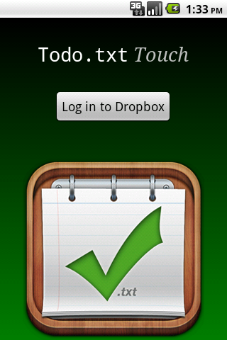
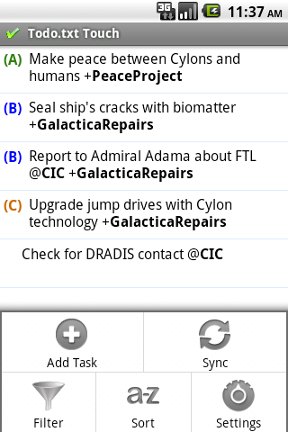
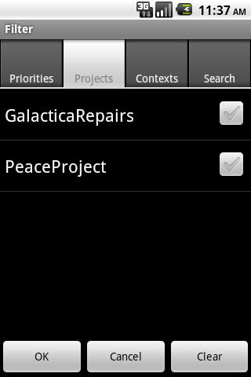
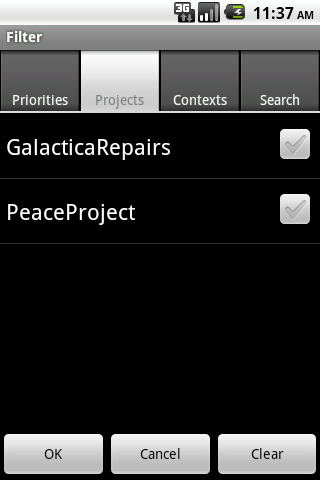

Todo.txt Text-based Task Manager
Future-proof your todo list and store it in a text file YOU control. Countless apps and sites store your tasks in their own proprietary database and file format. But you can open a todo.txt file with every text editor under the sun, regardless of operating system or vendor. That's why a todo.txt file is the discerning nerd's task manager of choice.
If you've got a file called todo.txt on your computer right now, you're in the right place. You don't have to launch a full-blown text editor every single time you add or update an item on your to-do list. Use the Todo.txt CLI and the Todo.txt Touch mobile app listed here instead.
These Todo.txt helper tools make it easy to add, update and prioritize tasks, tag them with project names and contexts, search, filter, and most importantly, mark your todo's done.
Todo.txt CLI (Command Line Interface)
With a simple but powerful shell script called todo.sh, you can interact with todo.txt at the command line for quick and easy, Unix-y access.
Here's a screencast of todo.sh in action.
To get productive with Todo.txt CLI, use these links:
- Downloads—download the latest stable version of Todo.txt CLI
- Documentation—find out how to use Todo.txt CLI
- Mailing List—get support or make feature requests
Todo.txt Touch for Android
Typing commands on your mobile phone isn't easy or fun, and neither is syncing files from your phone back to your computer. Currently coupled with Dropbox (and eventually, other cloud sources) Todo.txt Touch helps you manage your todo.txt on the go and automatically syncs the file to all your devices.
To use Todo.txt Touch, you'll need a free Dropbox account. Search for Todo.txt in the Android Market, or scan the barcode on the right to install Todo.txt Touch on your Android device.
See some screenshots of Todo.txt Touch in action:
 
 

Like Todo.txt CLI, Todo.txt Touch is open source. Browse and submit a patch to the app's source code on GitHub. See a list of upcoming features in the project issue tracker. Get in touch with the Todo.txt community if you're interested in helping to port Todo.txt Touch to iOS or another mobile platform.
Authors
Unless otherwise noted, all the todo.txt tools published herein are authored by Gina Trapani and Todo.txt community members and licensed under the GNU General Public License.
The Todo.txt project icon design is by John Rowley.
The Todo.txt CLI scripts were originally published as an ongoing series at Lifehacker.com. Special thanks to all the Lifehacker readers who contributed to Todo.sh by fixing code, adding features, reporting bugs and making suggestions.
All software comes as is with no warranty. Do back up your todo.txt before you read another word. Questions, support and help is available in the Todo.txt Mailing list.